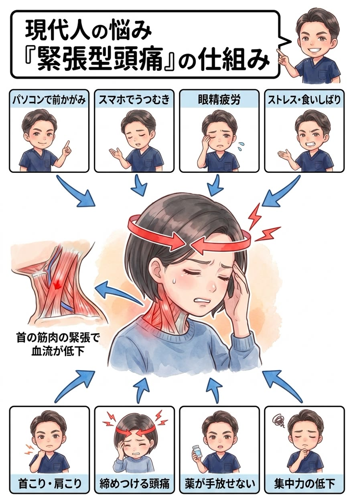

バッグにはいつも頭痛薬。その頭痛、実は「首と肩の筋肉」から来ているかもしれません。薬でしのぐ前に、なぜ痛むのかを筋肉のレベルまで知ってください。

緊張型頭痛のメカニズムはシンプルです。首の後ろから後頭部にかけての筋肉が硬く緊張すると、その中を通る血管が締めつけられて血流が悪化。酸素不足になった筋肉は疲労物質を溜め、周囲の神経を刺激します。この刺激が「頭を締めつけられるような、鈍い痛み」となって現れるのです。
ではなぜ、首の筋肉が緊張し続けるのか。犯人はうつむき姿勢と猫背です。約5〜6kgある頭が前に傾くほど、それを引き留める首の後ろの筋肉はフル稼働。パソコン・スマホ・眼精疲労・ストレスによる食いしばりも、首や頭の筋肉の緊張に拍車をかけます。


「痛くなったら薬を飲んで様子を見て」——多くの方がそうしています。つらいときに薬に頼るのは、決して悪いことではありません。ただ、少しだけ考えてみてください。薬で痛みを抑えている間に、硬くなった首の筋肉はゆるんでいるでしょうか？ 頭を前に出す姿勢は変わっているでしょうか？ 残念ながら、薬だけでは頭痛の“原因”までは消えないんです。
薬はあくまで“今の痛み”を一時的に抑えるもの。原因をそのままにすれば、頭痛は何度でも戻り、薬の量だけが増えていきます。
では、どうすればいいのか。答えはひとつです。体の仕組みと原因を突き止め、その体に合った具体的な施術と姿勢改善メニューを「継続」する。これに尽きます。 ダイエットが食事メニューの継続で、トレーニングが筋トレメニューの継続で結果を出すのと、まったく同じ。原因に合った正しいことを続ける——それだけが、頭痛薬を手放す道です。
正直にお話しします。原因である姿勢や骨盤へのアプローチは、必ずしも“気持ちいい場所”への施術ではありません。でもそれこそが、繰り返す頭痛を根本から減らすために本当に必要な一手です。とはいえ、今つらい首・肩の張りや頭の痛みを我慢してもらうつもりはありません。「今のつらさへの対応」と「原因への一手」を、必ずセットで行います。首を揉んで楽になる“だけ”で終わると、その場は楽でも、原因が残っている限りまた戻ってきてしまうからです。
原因は、あなたの体そのものではなくあなたの“生活”の中にあります。どんな姿勢でパソコンやスマホを見て、どれだけ目を酷使し、どんな枕で寝ているか——この生活習慣そのものに、根本改善のカギがあります。だから当院は、症状だけでなくあなたの生活そのものをとことん深くお聞きし、原因が潜む習慣にメスを入れます。ここまで踏み込む接骨院・整体は多くありません。これが当院の考える“本当の根本治療”です。
頭痛の施術は、首という繊細な部位を扱うため、ボキボキしないソフトな施術が中心です。苦手な方も安心です。
「ボキボキしてスッキリしたい」という方には、背中や骨盤などにダイナミックな矯正もご用意。ご希望に合わせます。
「ボキボキしてくれる整体を探していた」という方も、ぜひご相談ください。ご希望とお身体の状態に合わせて、最適な方をお選びいただけます。
今つらい緊張を丁寧に緩め、滞った血流を促して「今の頭痛・重さ」を軽くします。
猫背矯正・骨盤矯正で、頭が背骨の真上に乗る姿勢へ。首の筋肉が頑張らなくていい状態をつくり、頭痛が出にくい身体に整えます。
ここを整えることが、再発を防ぐいちばんのカギ。枕・スマホの見方・目の休め方・食いしばり対策まで、あなたの生活に合わせて具体的にお伝えし、継続をサポートします。

痛み方・頻度・出るタイミングを丁寧に伺い、施術で対応できる頭痛かどうかをまず見極めます。医療機関の受診が必要な場合は正直にお伝えします。

頭の位置・首のカーブ・肩甲骨の動きをチェックし、あなたの頭痛を起こしている緊張ポイントを特定します。

首・肩・後頭部をゆるめ、猫背矯正で姿勢から整えます。枕・スマホ姿勢など、頭痛を遠ざける生活のコツもお伝えします。
首・肩のこりや姿勢の崩れからくる「緊張型頭痛」は、筋肉と姿勢へのアプローチで改善が期待できます。突然の激しい頭痛やしびれ・吐き気を伴う頭痛は病気が隠れている場合があるため、まず医療機関の受診をおすすめします。
月に10日以上痛み止めを飲む状態が続くと、薬の使いすぎ自体が頭痛を招く「薬物乱用頭痛」につながることが知られています。薬の回数が増えてきた方こそ、原因のケアを早めに始めることをおすすめします。
頭痛の施術は首まわりの筋肉を丁寧にゆるめるソフトな施術が中心です。苦手な方はソフト矯正で対応します。逆にボキボキしたい方にはダイナミック矯正もご用意しています。
首の張りは前に出た頭を支えている“結果”の緊張だからです。頭を前へ出させている猫背や姿勢を整えないと、数日でまた緊張し戻ります。当院は原因の姿勢から整えます。